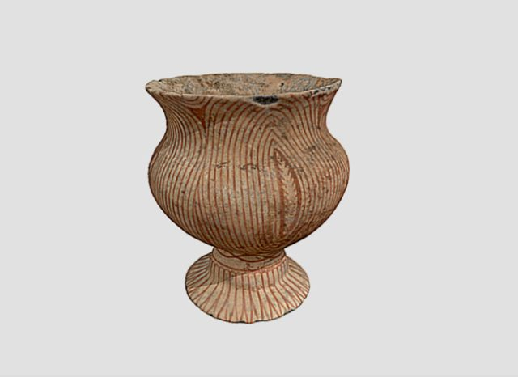

Thai Earthenware is one of the oldest forms of pottery in Thailand, representing the deep-rooted traditions of Thai
craftsmanship. Often used for functional purposes like storing water and food, earthenware pots were traditionally
made from locally sourced clay and shaped by hand or with a pottery wheel. After forming, the pots are fired at
relatively low temperatures, giving them their distinct reddish-brown color.
The decorative aspects of Thai earthenware evolved over time, with many pieces being adorned with intricate carvings,
patterns, and glazes. They were not only practical but also served as ceremonial and religious artifacts, playing a
significant role in various Thai cultural rites. Today, Thai earthenware is admired for its simplicity, durability,
and beauty, with some pieces remaining true to ancient designs and others incorporating modern artistic influences.
Thai Earthenware
